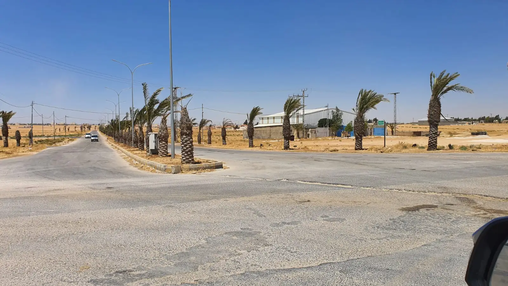
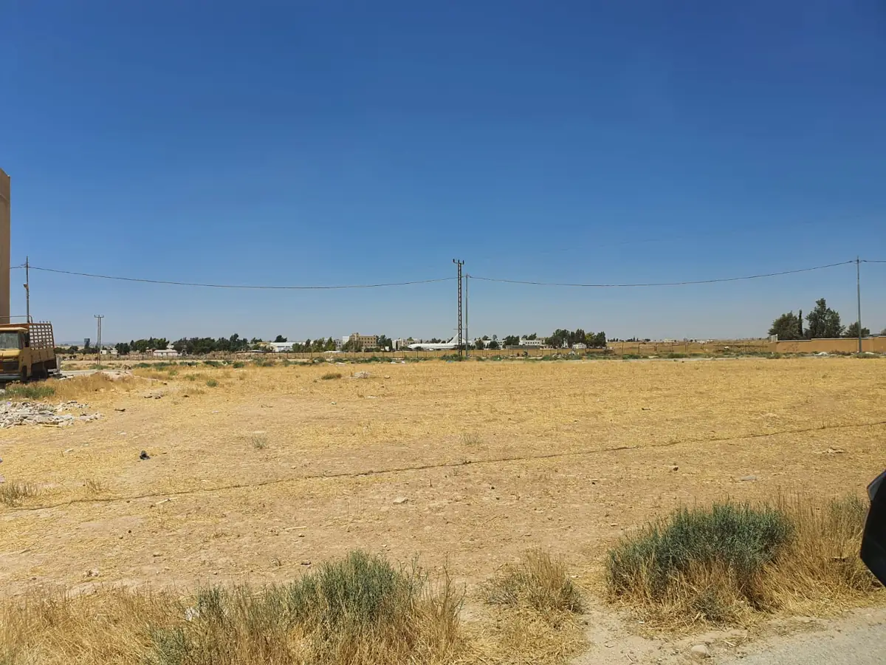
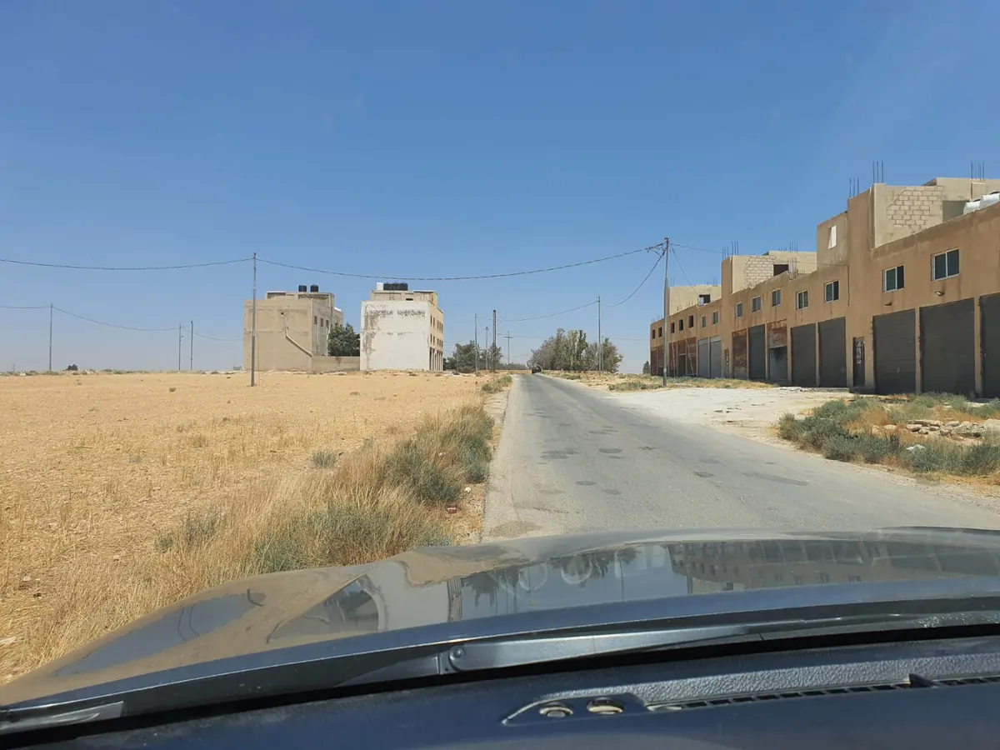
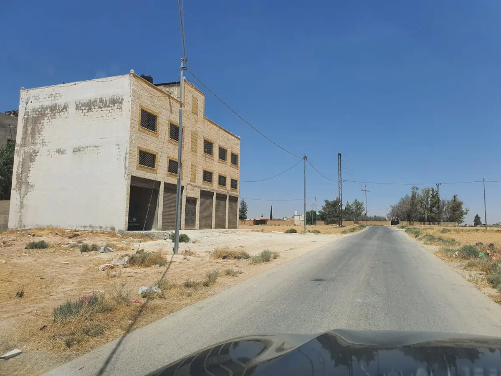
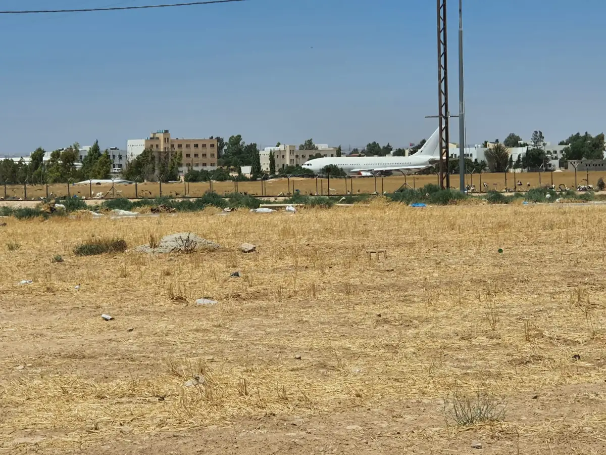
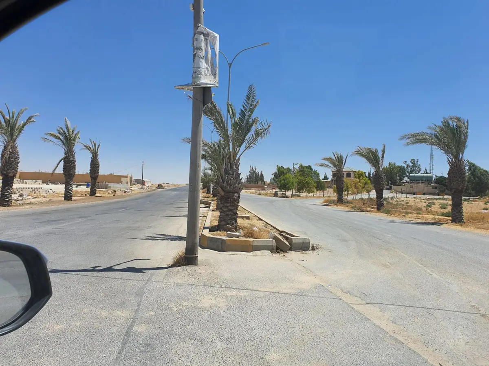

أرض بتنظيم صناعي · 375 م²
قطع أراضي الجيزة
قطع بمساحة 375 م² خلف بلدية الجيزة جنوب عمان، بتنظيم صناعي ونسبة بناء 50% وارتداد جانبي صفر — تسمح ببناء أربعة أبواب للاستعمال الصناعي أو التجاري الخفيف.
ما يعادل نحو 67 ديناراً للمتر المربع · تختلف الأسعار حسب القطعة وموقعها.
ما نعرفه عن هذه الأرض
الارتداد الجانبي صفر — وهنا مربط الفرس
نسبة بناء 50% على 375 م² تعني 187.5 م² مسطح بناء للطابق. لكن الرقم الأهم هو الارتداد الجانبي: كونه صفراً يعني إمكان البناء حتى حدّ القطعة من الجانبين، وهو ما يجعل صفّ أربعة أبواب متلاصقة ممكناً بدل بناء منفصل تأكل الارتدادات أطرافه.
والصور أدناه من زيارة ميدانية للموقع: مستودعات وورش ومحال قائمة بالفعل، وطرق معبدة بإنارة وشبكة كهرباء واصلة — محيط صناعي بدأ العمل فيه، لا مخطط على الورق.
- يسمح ببناء أربعة أبواب للاستعمال الصناعي أو التجاري الخفيف.
- قوشان مستقل لكل قطعة وفق معلومات المصدر.
- طرق معبدة وإنارة شارع — مُتحقق منه في الصور الميدانية.
- شبكة كهرباء واصلة إلى الموقع — ظاهرة في الصور.
- مستودعات وورش ومحال تجارية عاملة في المحيط المباشر.
أحكام البناء
وفق العرض المصوّر من المصدر العقاري — وليست منقولة عن مخطط تنظيمي رسمي.
- المساحة
- 375 م²
- التنظيم
- صناعي
- نسبة البناء
- 50%
- الارتداد الجانبي
- صفر
- الاستعمال
- صناعي · تجاري خفيف
- الأبواب الممكنة
- 4
- مسطح البناء للطابق
- 187.5 م² (حسابنا)
- سعر المتر
- ≈ 67 د.أ (حسابنا)
بنود لم نتحقق منها بعد
- أحكام البناء أعلاه من عرض المصدر العقاري، لا من مخطط موقع تنظيمي رسمي. اطلب مخططاً تنظيمياً من البلدية للتأكد من النسبة والارتدادات والاستعمال المسموح.
- رقم الحوض والقطعة ومخطط الأراضي الرسمي من دائرة الأراضي والمساحة.
- عدد القطع المتاحة — يتغيّر حسب وقت التواصل.
- مطابقة المساحة مع سند التسجيل — سعر المتر أعلاه محسوب على 375 م² المعلنة.
من الموقع
صور ميدانية بلا تجميل
صور مأخوذة من الموقع نفسه، بلا معالجة ولا لقطات مخزون. نعرضها كما هي لتقرأ المنطقة على حقيقتها قبل أن تتحرك للمعاينة.





الموقع
خلف بلدية الجيزة، جنوب عمان
الموقع خلف بلدية الجيزة جنوب عمان، على مقربة من محور الطريق الصحراوي ومحيط مطار الملكة علياء الدولي. افتح الموقع على الخريطة وتحقق من المسافات والمداخل بنفسك قبل المعاينة.
قربها من مقر البلدية يسهّل عليك مراجعة التنظيم والاستعمال المسموح في الموقع نفسه.
معلومة مهمة
قرارك يبدأ من معلومات قابلة للتحقق
وصلت معلومات هذه الأرض إلى المنصة عبر مصدر عقاري، لا من المالك مباشرة. المساحة وأحكام البناء المعروضة أعلاه منقولة عن عرض المصدر ولم نطابقها بعد مع مخطط تنظيمي رسمي. سعر المتر ومسطح البناء حسبناهما على تلك الأرقام، وليسا تقييماً رسمياً.
اطلب مخطط الأراضي من دائرة الأراضي والمساحة ومخطط الموقع التنظيمي من بلدية الجيزة، وتحقق من سند التسجيل والمساحة والاستعمال المسموح وأي أتعاب أو عمولة قبل دفع أي عربون.
التواصل وطلب التفاصيل لا يشكلان التزامًا بالشراء. اقرأ الإفصاح العقاري.
اطلب التفاصيل
المساحات المتاحة، الأسعار، وترتيب المعاينة
أرسل رسالة جاهزة وسنشاركك ما توفر لدينا عن القطع المتاحة وتفاصيلها.